Public media newsroom
East Lansing, Michigan
Brand transformation · editorial products · audience
I made the newsroom visible.
I arrived in June 2025 to a strong newsroom whose people and depth were largely hidden behind an institutional digital front door. I rebranded WKAR News and Election 2026 around the journalists: their faces, voices, subject expertise and deep-dive conversations now connect with listeners and readers across the website and The Signal newsletters. I also introduced digital analytics to editorial planning, brought the digital team into newsroom decisions and made the full staff part of the digital process. Around those changes I built new editorial products, enterprise hubs, freelance and student contribution systems, and expanded local-politics capacity. The digital audience roughly doubled.
I rebranded WKAR News and Election 2026 around the journalists: their faces, voices, expertise and deeper conversations. Then I brought analytics and the digital team into editorial planning, made the full staff part of the digital process, and carried that strategy across the website, The Signal and Signal+. The digital audience roughly doubled.
Four case studies in turning editorial strategy into products and operating models a team can sustain.
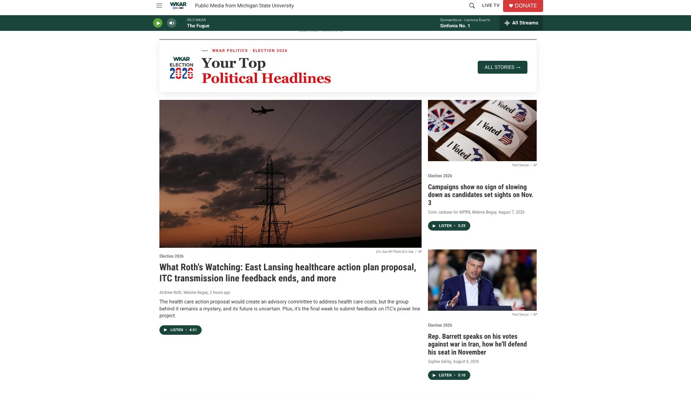
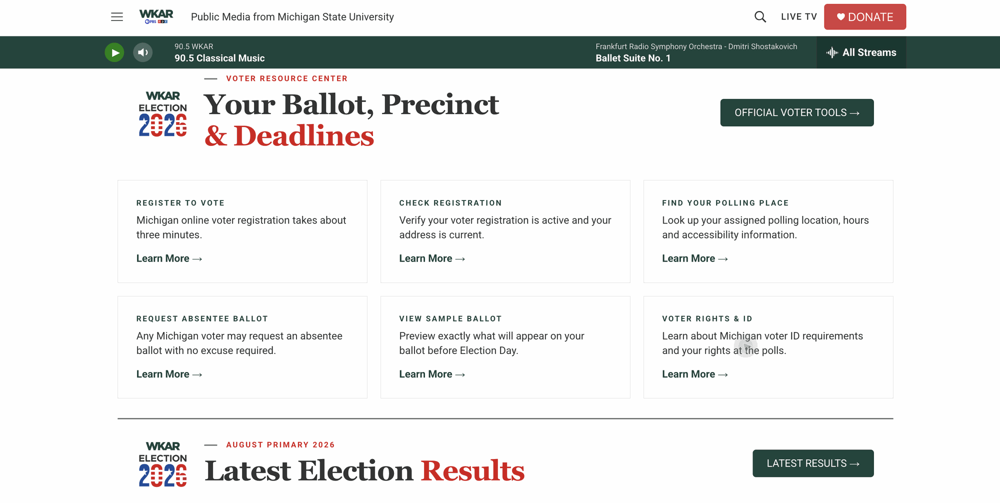
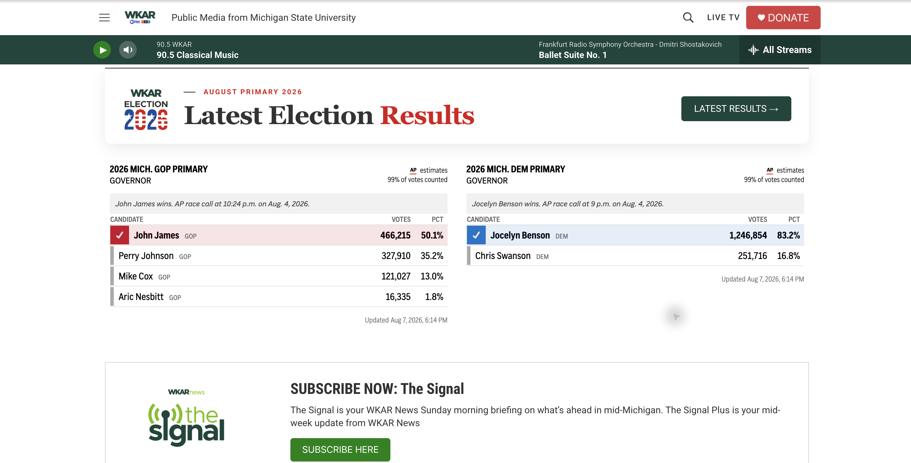
~100%
Daily-average active users on wkar.org. The growth inflection follows my June 2025 arrival and the shift into digital-first distribution.
8.4%
Click rate on Sunday Signal across 30 original sends, roughly 7× the media-publisher median. Resends excluded.
3
Editorial products launched inside one year: The Signal, The Signal+ and Election 2026.
The visible newsroom
People should know who is doing the work.
Before, the institution was visible and much of the expertise sat behind it. I put journalists’ names, faces, beats and recurring roles into the front door so readers and listeners can recognize the people covering their communities and build a relationship with their work.
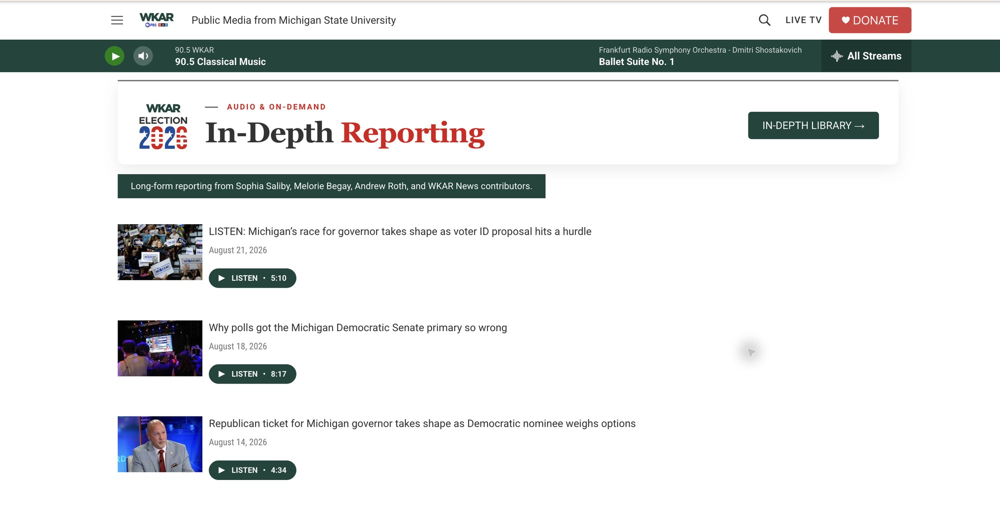
From plan to launch
I designed the newsroom we were building.
The working deck connected the editorial strategy to specific products, hires, launch dates and audience promises. It gave the newsroom a shared sequence for building WKAR News, Election 2026, The Signal and The Signal+ as one system.
Swipe through the build deck →
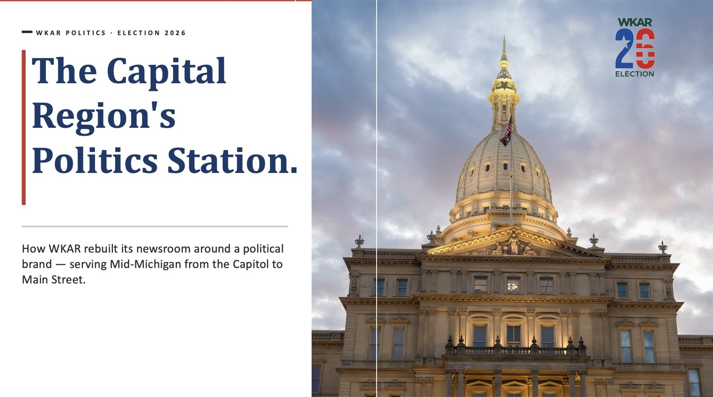
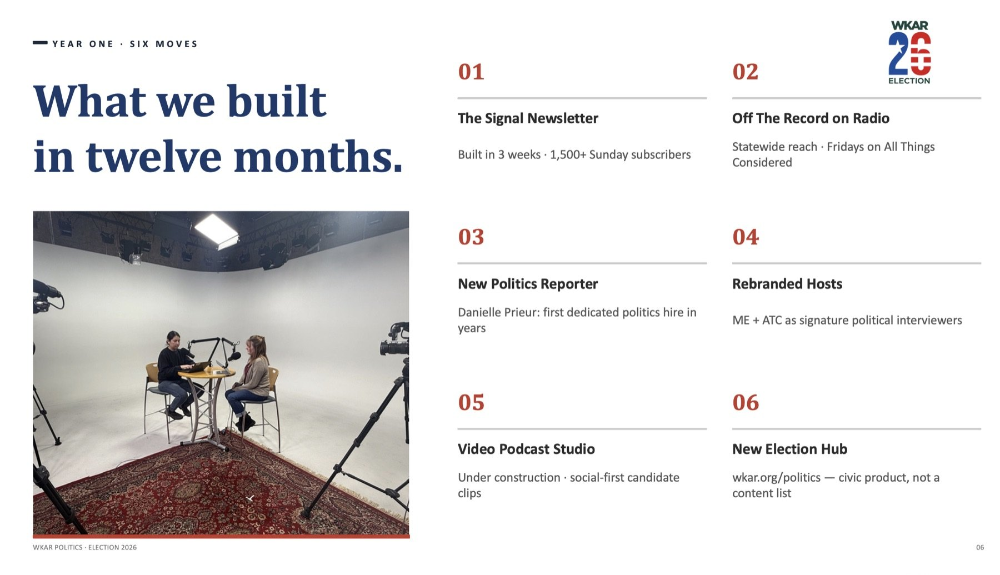
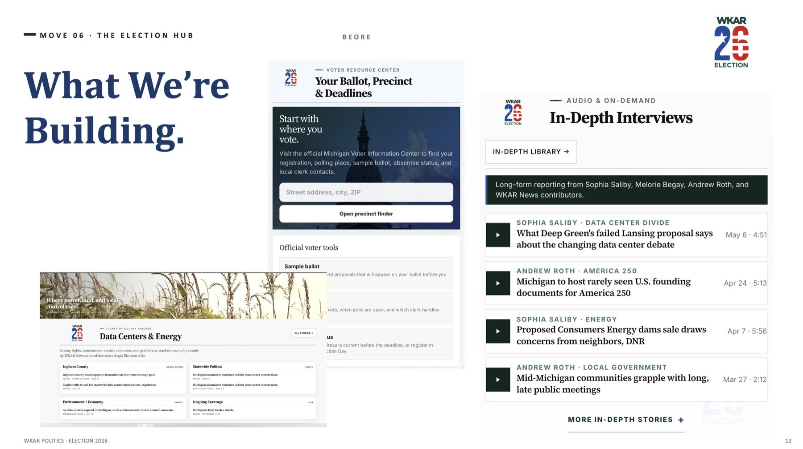
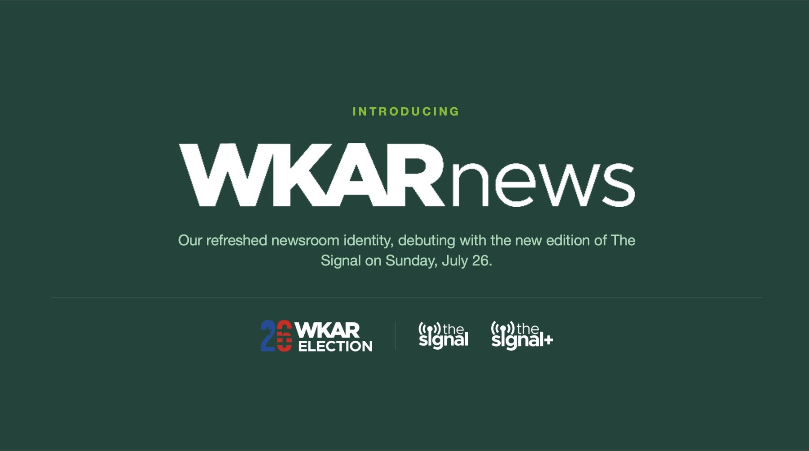
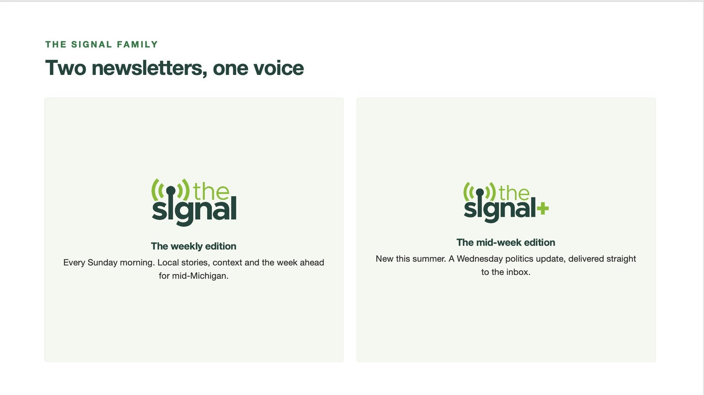
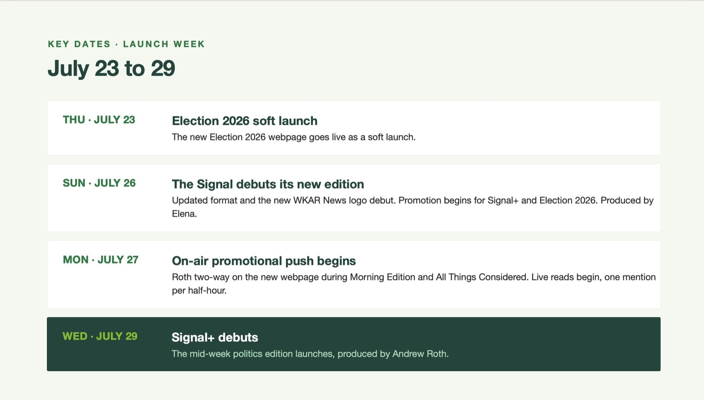
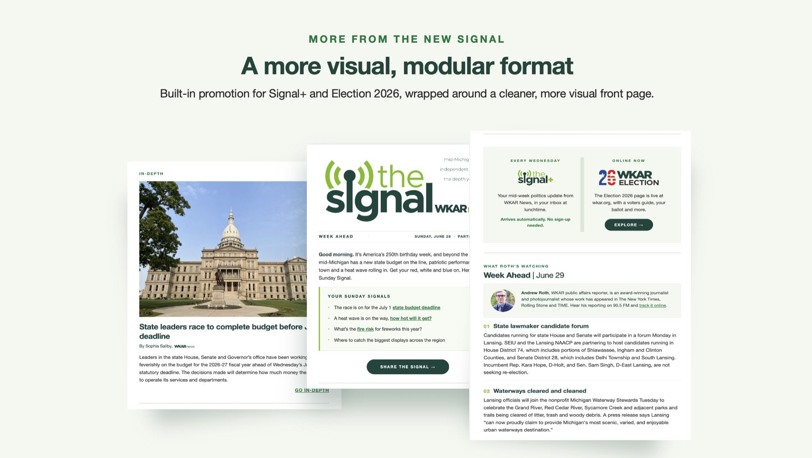
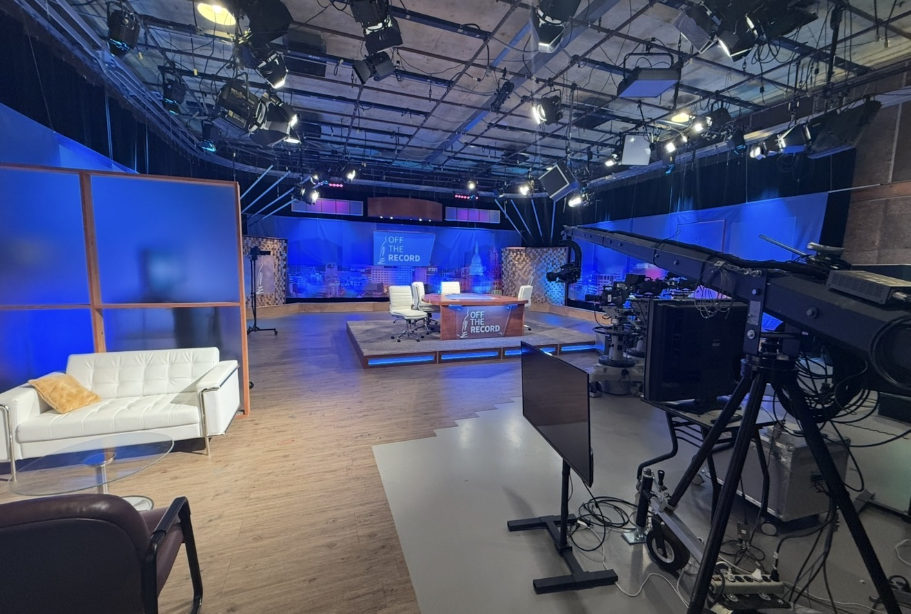
The work
Four case studies · 2025 to 2026The Signal
Identified the audience opportunity, conceived the product, shaped its identity and editorial architecture, and led a three-week build before systematizing production.
Newsletter · Product · Editorial systems
Election 2026
A dedicated election destination connecting local questions with statewide reporting, built around a clear strategy, content architecture and service promise.
Strategy · Content architecture · Service
Audience & Growth
During the digital transformation the audience roughly doubled and recent monthly users reached about three times NPR Studio’s typical-station benchmark. The floor moved, not just the peak.
Analytics · Benchmarks · Method
The Newsroom
A visible, talent-led operation built through hiring, coaching and clear ownership, including a freelance reporter system that protected capacity after federal funding cuts and a full-time local politics reporter hired to expand in-depth election coverage.
Talent · Hiring · Freelance